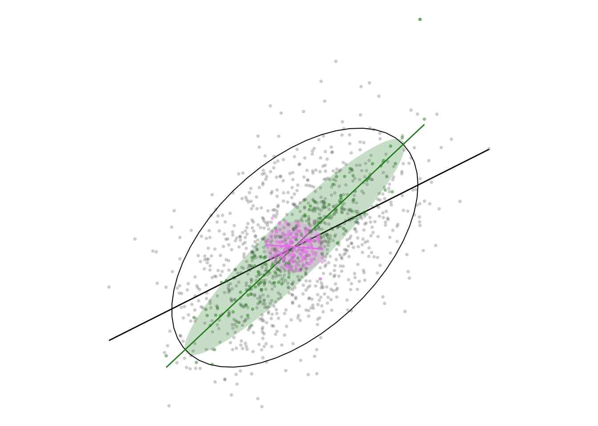
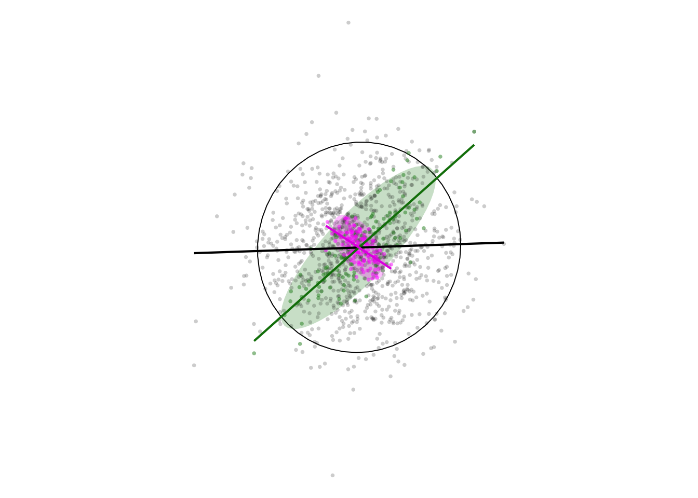

Code
library(MASS)
library(ggplot2)
library(ggpubr)
library(tidyverse)This page produces a coloured version of Figure 5.7 which may be a little easier to read. It also uses standard deviation ellipses to make things a bit clearer (I hope).
Using the MASS::mvrnorm() function we can create a dataframe with x and y variables with some requested correlation. We also reorder by the sum of the two variables (in effect from lower-left to upper-right), and number the observations on that basis. This allows us to aggregate observations that are broadly similar or broadly different.
get_correlated_df <- function(cor = 0.5) {
# generate a multivariate normal distribution
# mu is the mean centre, Sigma is the covariance matrix
mvrnorm(n = 1024, mu = c(5, 5),
Sigma = matrix(c(1, cor, cor, 1), 2, 2)) %>%
as.data.frame() %>%
rename(x = V1, y = V2) %>%
arrange(x + y) %>%
mutate(id = row_number())
}Next two functions that aggregate either similar or different observations. This is a fairly crude approach but it works. agg_similar() uses integer division to create a ‘grouper’ variable that goes eight 0s, then eight 1s, then eight 2s, and so on up to eight 127s. When group_by is applied using this variable, sets of 8 similar observations are aggregated and the mean taken to give a new dataset.
Conversely, if the grouper variable is based on the remainder from division by 128, we get 8 sequences of 0, 1, 2, 3,… 127, and when these are aggregated into groups, each will consist of eight observations at widely separated positions in the sequence (i.e., with very different values).
# aggregate similar observations
agg_similar <- function(df) {
df %>%
mutate(grouper = id %/% 8) %>%
group_by(grouper) %>%
summarise(x = mean(x),
y = mean(y)) %>%
dplyr::select(-grouper) %>%
ungroup()
}
# aggregate different observations
agg_different <- function(df) {
df %>%
mutate(grouper = id %% 128) %>%
group_by(grouper) %>%
summarise(x = mean(x),
y = mean(y)) %>%
dplyr::select(-grouper) %>%
ungroup()
}We also make some plotting functions so we don’t have to repeat a lot of code. These add three plots based on a dataset. A scatterplot of the points, a standard deviation ellipse, and a best fit line. This will make sense when you see the plots.
add_df_plots <- function(g, df, colour, alpha_pts = 0.5,
alpha_ellipse_fill = 0.25, polygon = TRUE) {
g <- g +
geom_point(data = df, aes(x = x, y = y),
colour = colour, alpha = alpha_pts, pch = 16, size = 1)
if (polygon) {
g <- g +
stat_ellipse(data = df, aes(x = x, y = y),
geom = "polygon", alpha = alpha_ellipse_fill, fill = colour)
} else {
g <- g +
stat_ellipse(data = df, aes(x = x, y = y), colour = colour, linewidth = 0.35)
}
g + geom_smooth(data = df, aes(x = x, y = y),
method = lm, se = FALSE, colour = colour, linewidth = 0.5)
}
three_plots <- function(df1, df2, df3) {
g <- ggplot()
g <- add_df_plots(g, df1, "black", alpha_pts = 0.2, polygon = FALSE)
g <- add_df_plots(g, df2, "forestgreen")
g <- add_df_plots(g, df3, "violet")
g + coord_equal() + theme_void()
}So now make some datsets and see what we get.
First a dataset with approximage correlation between x and y of 0.5. We then aggregate it two ways and plot the results.

When we aggregate similar observations (the green ellipse) the correlation is increased, while aggregating different observations inverts the correlation (the violet ellipse)! The initial correlation is seen in the unfilled black ellipse.
The effect is even more remarkable for uncorrelated data:

What do we take from this in a geographical setting? Well, if indeed “near things are more related than distant things”, then in many situations where data are aggregated spatially based on proximity positive correlations are likely to be ‘enhanced’, and we may even see correlations where none exist at the individual level.
# License (MIT)
#
# Copyright (c) 2023 David O'Sullivan
#
# Permission is hereby granted, free of charge, to any person
# obtaining a copy of this software and associated documentation
# files (the "Software"), to deal in the Software without restriction,
# including without limitation the rights to use, copy, modify, merge,
# publish, distribute, sublicense, and/or sell copies of the Software,
# and to permit persons to whom the Software is furnished to do so,
# subject to the following conditions:
#
# The above copyright notice and this permission notice shall be included
# in all copies or substantial portions of the Software.
#
# THE SOFTWARE IS PROVIDED "AS IS", WITHOUT WARRANTY OF ANY KIND, EXPRESS
# OR IMPLIED, INCLUDING BUT NOT LIMITED TO THE WARRANTIES OF MERCHANTABILITY,
# FITNESS FOR A PARTICULAR PURPOSE AND NONINFRINGEMENT. IN NO EVENT SHALL
# THE AUTHORS OR COPYRIGHT HOLDERS BE LIABLE FOR ANY CLAIM, DAMAGES OR OTHER
# LIABILITY, WHETHER IN AN ACTION OF CONTRACT, TORT OR OTHERWISE, ARISING
# FROM, OUT OF OR IN CONNECTION WITH THE SOFTWARE OR THE USE OR OTHER
# DEALINGS IN THE SOFTWARE.© 2023 David O’Sullivan